library(ggplot2)
library(dplyr)
library(babynames)
library(jbplot)
library(modelr)
library(maps) # nolint: unused_import_linter. maps is required by map_data().
library(sf)
library(USAboundaries)
library(USAboundariesData) # nolint: unused_import_linter. Needed by USAboundaries.
library(ggraph)
library(tidygraph)
knitr::opts_chunk$set(
comment = "#>",
fig.align = "center"
)ggplot2 (Layers)
exercises
ggplot2
Workbook for completing quizzes and exercises from the “Layers” chapters of ggplot2: Elegant Graphics for Data Analysis, third edition, with comparisons to solutions from Solutions to ggplot2: Elegant Graphics for Data Analysis.
Introduction
This workbook includes answers and solutions to the quizzes and exercises from ggplot2: Elegant Graphics for Data Analysis and Solutions to ggplot2: Elegant Graphics for Data Analysis, organized by chapter. It includes excerpts from both books, copied here.
WARNING, SPOILERS! If you haven’t read the ggplot2 book and intend to complete the quizzes and exercises, don’t read this notebook. It contains my (potentially wrong) answers to both.
3 Individual geoms
3.1.1 Exercises
What geoms would you use to draw each of the following named plots?
- Scatterplot
- Line chart
- Histogram
- Bar chart
- Pie chart
Answer:
- Scatterplot:
geom_point() - Line chart:
geom_line() - Histogram:
geom_histogram() - Bar chart:
geom_bar() - Pie chart: there is no native geom for a pie chart, but, as the R Graph Gallery demonstrates, it is possible to create a pie chart using
geom_bar()andcoord_polar()
GG Solutions:
- Scatterplot:
geom_point() - Line chart:
geom_line() - Histogram:
geom_histogram() - Bar chart:
geom_bar() - Pie chart: ggplot2 does not have a geom to draw pie charts. One workaround, according to the R Graph Gallery is to build a stacked bar chart with one bar only using the
geom_bar()function and then make it circular withcoord_polar()
- What’s the difference between
geom_path()andgeom_polygon()? What’s the difference betweengeom_path()andgeom_line()?
Answer: geom_path() connects observations with a line in the order they appear in the data, geom_line() connects them in order along the x axis, and geom_polygon() connects the start and end points of geom_path() and fills in the plot.
GG Solutions:
geom_polygondraws the same graph (lines) asgeom_path, but it fills these lines with colorgeom_line()connects points from left to right, whereasgeom_path()connects points in the order they appear in the data
- What low-level geoms are used to draw
geom_smooth()? What aboutgeom_boxplot()andgeom_violin()?
Answer: reviewing the source code:
geom_smooth() uses:
geom_path()by way ofgeom_line()geom_area()by way ofgeom_ribbon()
geom_boxplot() uses:
geom_point()geom_path()by way ofgeom_segment()andgeom_crossbar()geom_polygon()by way ofgeom_crossbar()
geom_violin() uses:
geom_path()geom_polygon()
GG Solutions:
(kangnade)
geom_point(),geom_path(), andgeom_area()are used to drawgeom_smooth()geom_rect(),geom_line(),geom_point()are used forgeom_boxplot()geom_area()andgeom_path()are used forgeom_violin()
Note: GG Solutions answers appear to be incorrect guesses.
4 Collective geoms
Geoms can be roughly divided into individual and collective geoms. An individual geom draws a distinct graphical object for each observation (row). For example, the point geom draws one point per row. A collective geom displays multiple observations with one geometric object. This may be a result of a statistical summary, like a boxplot, or may be fundamental to the display of the geom, like a polygon. Lines and paths fall somewhere in between: each line is composed of a set of straight segments, but each segment represents two points. How do we control the assignment of observations to graphical elements? This is the job of the group aesthetic.
4.5 Exercises
GG Solutions offers no answers for this section.
- Draw a boxplot of
hwyfor each value ofcyl, without turningcylinto a factor. What extra aesthetic do you need to set?
Answer: the group aesthetic is required.
ggplot(mpg, aes(cyl, hwy, group = cyl)) +
geom_boxplot()- Modify the following plot so that you get one boxplot per integer value of
displ.
ggplot(mpg, aes(displ, cty)) +
geom_boxplot()Answer: grouping by the floor of displacement works, but is arranged strangely. Mutating displacement first is a better solution:
ggplot(mpg, aes(displ, cty, group = floor(displ))) +
geom_boxplot()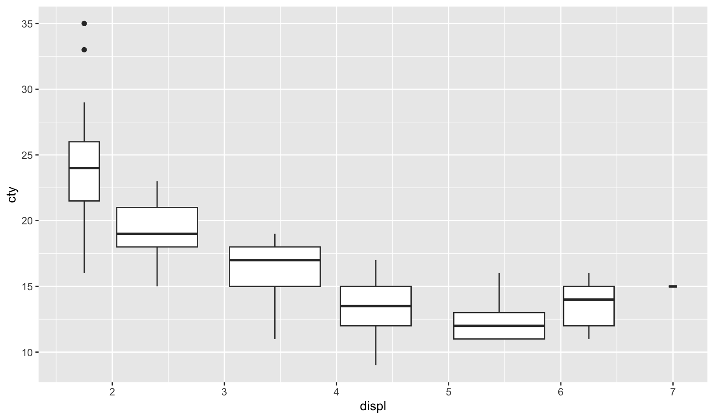
mpg |>
mutate(displ = floor(displ)) |>
ggplot(aes(displ, cty, group = displ)) +
geom_boxplot()- When illustrating the difference between mapping continuous and discrete colours to a line, the discrete example needed
aes(group = 1). Why? What happens if that is omitted? What’s the difference betweenaes(group = 1)andaes(group = 2)? Why?
Answer: using the example from the book, omitting the group aesthetic generates an error:
`geom_line()`: Each group consists of only one observation.
ℹ Do you need to adjust the group aesthetic?There is no difference between aes(group = 1) and aes(group = 2), presumably because both methods put all observations into a single group.
df <- data.frame(x = 1:3, y = 1:3, colour = c(1, 3, 5))
ggplot(df, aes(x, y, colour = factor(colour))) +
geom_line(aes(group = 1), linewidth = 2) +
geom_point(size = 5)
ggplot(df, aes(x, y, colour = factor(colour))) +
geom_line(aes(group = 2), linewidth = 2) +
geom_point(size = 5)- How many bars are in each of the following plots? (Hint: try adding an outline around each bar with
colour = "white")
ggplot(mpg, aes(drv)) +
geom_bar()
ggplot(mpg, aes(drv, fill = hwy, group = hwy)) +
geom_bar()
mpg2 <- mpg %>%
arrange(hwy) %>%
mutate(id = seq_along(hwy))
ggplot(mpg2, aes(drv, fill = hwy, group = id)) +
geom_bar()Answer: in the first plot, there are three bars. In the second, there is one bar for each unique value for hwy in each column. In the third, there is one bar for each observation of hwy.
ggplot(mpg, aes(drv)) +
geom_bar(color = "white")ggplot(mpg, aes(drv, fill = hwy, group = hwy)) +
geom_bar(color = "white")mpg |>
arrange(hwy) |>
mutate(id = seq_along(hwy)) |>
ggplot(aes(drv, fill = hwy, group = id)) +
geom_bar(color = "white")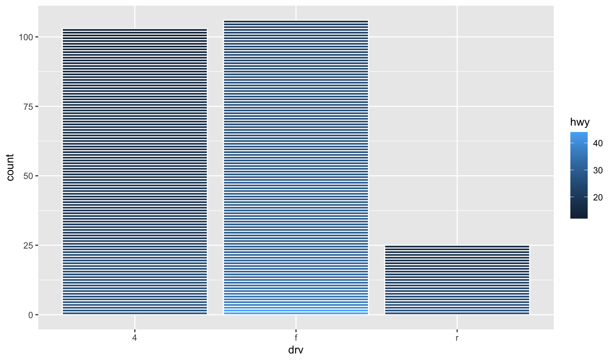
- Install the babynames package. It contains data about the popularity of babynames in the US. Run the following code and fix the resulting graph. Why does this graph make me unhappy?
hadley <- filter(babynames, name == "Hadley")
ggplot(hadley, aes(year, n)) +
geom_line()Answer: the popularity of “Hadley” is sadly declining.
babynames |>
filter(name == "Hadley") |>
ggplot(aes(year, n, group = sex, color = sex)) +
geom_line()Bonus: a comparison of the popularity of my name (John) and Hadley:
babynames |>
filter(name %in% c("Hadley", "John")) |>
ggplot(aes(year, prop, color = interaction(name, sex, sep = ", ", lex.order = TRUE))) +
geom_line() +
scale_y_log10() +
scale_color_viridis_d() +
labs(x = "", y = "", color = "Name, Sex") +
labs(title = "Relative popularity of the names Hadley and John") +
theme_quo()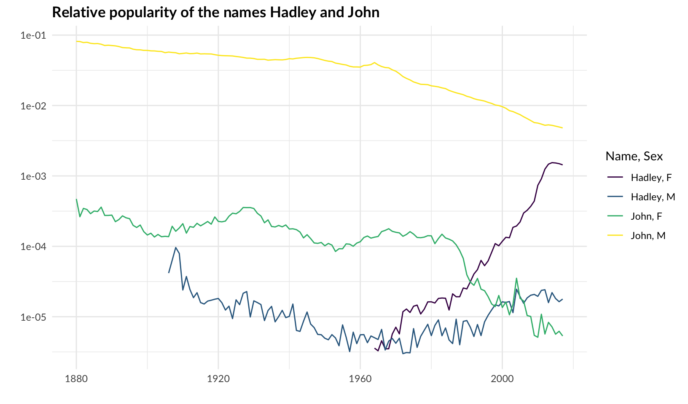
Note: group is redundant for geom_line() when using color.
5 Statistical summaries
5.4.1 Exercises
- What
binwidthtells you the most interesting story about the distribution ofcarat?
Answer: as answered in 2.6.6 Exercises:
Answer: using trial and error, binwidth = 0.01 reveals that carat weight is skewed towards round numbers (1, 1.25, 1.5, 2, etc.). Using the smaller binwidth = 0.005 doesn’t improve the pattern, and makes it harder to see.
ggplot(diamonds, aes(carat)) +
geom_histogram(binwidth = 0.01)
GG Solutions:
- Highly subjective answer, but I would go with 0.2 since it gives you the right amount of information about the distribution of
carat: right-skewed.
- Draw a histogram of
price. What interesting patterns do you see?
Answer: price has a multi-modal distribution with a gap. Looking at the underlying data, there are no prices between $1454 and $1546
ggplot(diamonds, aes(price)) +
geom_histogram(binwidth = 50)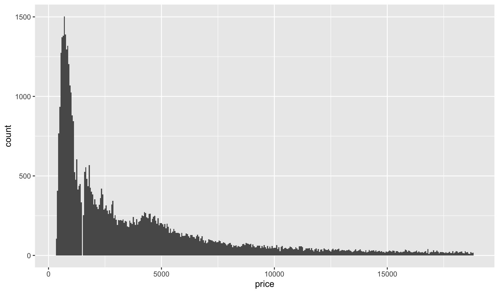
diamonds |>
filter(price >= 1454, price <= 1546)#> # A tibble: 24 × 10
#> carat cut color clarity depth table price x y z
#> <dbl> <ord> <ord> <ord> <dbl> <dbl> <int> <dbl> <dbl> <dbl>
#> 1 0.5 Very Good D SI1 61.6 56 1454 5.09 5.11 3.14
#> 2 0.52 Ideal I VVS1 60.1 56 1454 5.24 5.27 3.16
#> 3 0.54 Ideal H VS1 61.2 55 1454 5.25 5.31 3.23
#> 4 0.51 Premium G VS2 61.2 60 1546 5.17 5.12 3.15
#> 5 0.51 Ideal G VS2 62.9 54 1546 5.12 5.08 3.21
#> 6 0.51 Premium G VS2 62.4 57 1546 5.11 5.09 3.18
#> 7 0.51 Premium G VS2 62.7 58 1546 5.12 5.09 3.2
#> 8 0.51 Premium G VS2 62.2 57 1546 5.15 5.1 3.19
#> 9 0.51 Ideal G VS2 62.7 57 1546 5.12 5.05 3.19
#> 10 0.51 Premium G VS2 62.9 58 1546 5.11 5.06 3.2
#> # ℹ 14 more rowsGG Solutions:
- It’s skewed to the right and has a long tail. Also, there is a small peak around 5000 and a huge peak around 0.
- How does the distribution of
pricevary withclarity?
Answer: a boxplot of price by clarity shows that diamonds with better clarity aren’t necessarily more expensive.
However, as noted in my R Training Log and as answered in 2.6.6 Exercises:
7.6 Patterns and models covers models and residuals, here showing how to reveal the expected relationship between cut and price:
We can remove the relationship between carats and price, and redo the boxplot, which shows the expected relationship:
ggplot(diamonds, aes(clarity, price)) +
geom_boxplot()# remove carat weight as a confounding variable
diamonds |>
add_residuals(lm(log(price) ~ log(carat), data = diamonds)) |>
mutate(resid = exp(resid)) |>
ggplot(aes(clarity, resid)) +
geom_boxplot()GG Solutions:
- The range of prices is similar across clarity and the median and IQR vary greatly with clarity.
- Overlay a frequency polygon and density plot of
depth. What computed variable do you need to map toyto make the two plots comparable? (You can either modifygeom_freqpoly()orgeom_density().)
Answer: you need to either divide or multiply y by the total number of observations, nrow(diamonds) using after_stat().
ggplot(diamonds, aes(depth)) +
geom_freqpoly(aes(y = after_stat(count) / nrow(diamonds)), binwidth = 1) +
geom_density() +
labs(y = "")ggplot(diamonds, aes(depth)) +
geom_freqpoly(binwidth = 1) +
geom_density(aes(y = after_stat(density) * nrow(diamonds))) +
labs(y = "")Notes: from the documentation for after_stat():
Most aesthetics are mapped from variables found in the data. Sometimes, however, you want to delay the mapping until later in the rendering process. ggplot2 has three stages of the data that you can map aesthetics from. The default is to map at the beginning, using the layer data provided by the user. The second stage is after the data has been transformed by the layer stat. The third and last stage is after the data has been transformed and mapped by the plot scales. The most common example of mapping from stat transformed data is the height of bars in
geom_histogram(): the height does not come from a variable in the underlying data, but is instead mapped to the count computed bystat_bin(). An example of mapping from scaled data could be to use a desaturated version of the stroke colour for fill. If you want to map directly from the layer data you should not do anything special. In order to map from stat transformed data you should use theafter_stat()function to flag that evaluation of the aesthetic mapping should be postponed until after stat transformation. Similarly, you should useafter_scale()to flag evaluation of mapping for after data has been scaled. If you want to map the same aesthetic multiple times, e.g. map x to a data column for the stat, but remap it for the geom, you can use thestage()function to collect multiple mappings.
GG Solutions answer not included here.
Note: after reading the Generated Variables section, there is an easier solution:
ggplot(diamonds, aes(depth)) +
geom_freqpoly(aes(y = after_stat(density)), binwidth = 1) +
geom_density() +
labs(y = "")
Bonus: overlay a PDF and ECDF on a histogram.
ggplot(diamonds, aes(price)) +
geom_histogram(aes(y = after_stat(ncount)), binwidth = 50, fill = "gray") +
stat_ecdf() +
labs(x = "", y = "") +
theme_quo()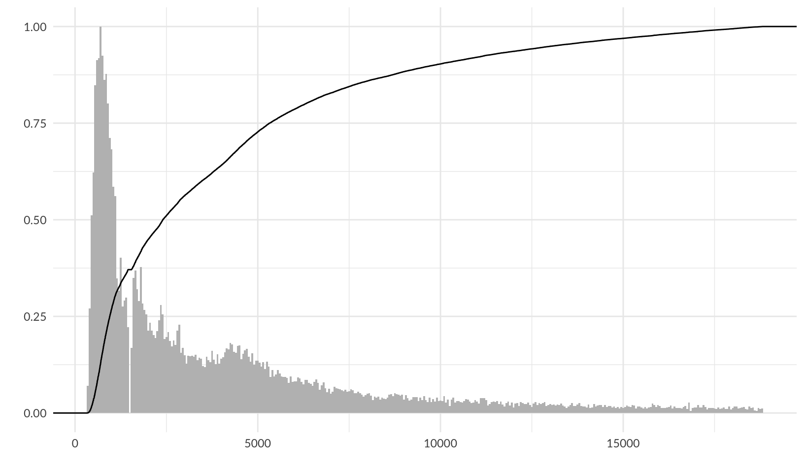
ggplot(diamonds, aes(price)) +
geom_histogram(binwidth = 50, fill = "gray") +
# nolint next: line_length_linter.
# see https://stackoverflow.com/questions/27611438/density-curve-overlay-on-histogram-where-vertical-axis-is-frequency-aka-count
geom_density(aes(y = after_stat(density * nrow(diamonds) * 50))) +
labs(x = "", y = "") +
theme_quo()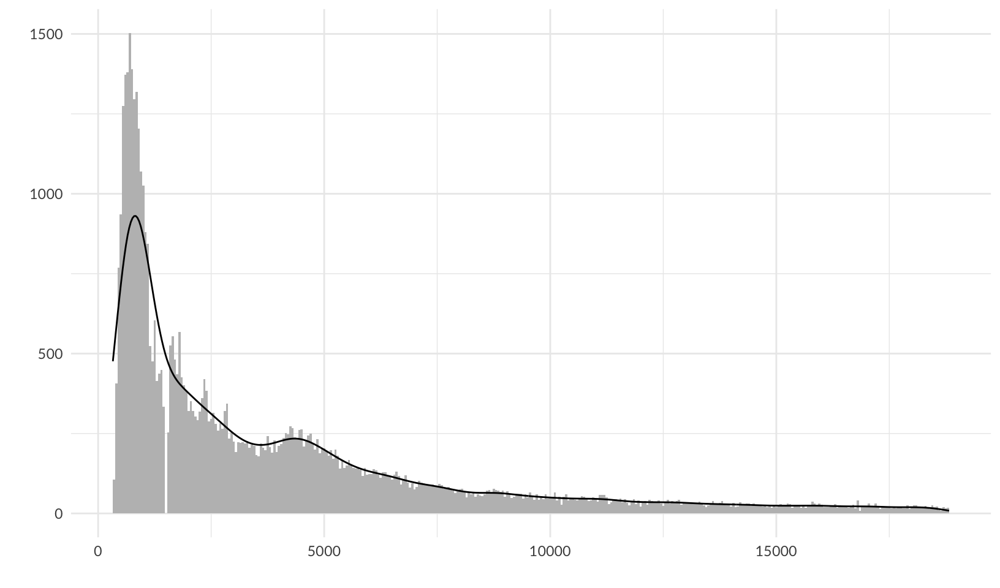
ggplot(diamonds, aes(price)) +
geom_histogram(aes(y = after_stat(ncount)), binwidth = 50, fill = "gray") +
# TODO: the factor of 0.62 was determined by trial and error, find underlying formula
# the maximum density / the maximum count of the previous plot = 930.57 / 1503 = 0.62
# but that doesn't work here
geom_density(aes(y = after_stat(ndensity * 0.62))) +
stat_ecdf() +
labs(x = "", y = "") +
theme_quo()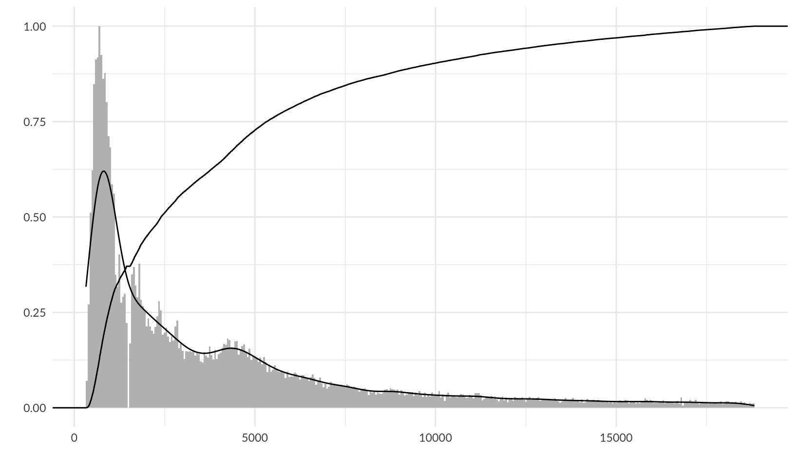
6 Maps
Plotting geospatial data is a common visualisation task, and one that requires specialised tools. Typically the problem can be decomposed into two problems: using one data source to draw a map, and adding metadata from another information source to the map. This chapter will help you tackle both problems.
Bonus
There are no exercises, so let’s draw a map of Minnesota using polygon maps!
map_data("county", "minnesota") |>
select(lon = long, lat, group) |>
ggplot(aes(lon, lat, group = group)) +
geom_polygon(fill = "white", colour = "grey50") +
coord_quickmap() +
labs(x = "", y = "") +
theme_quo()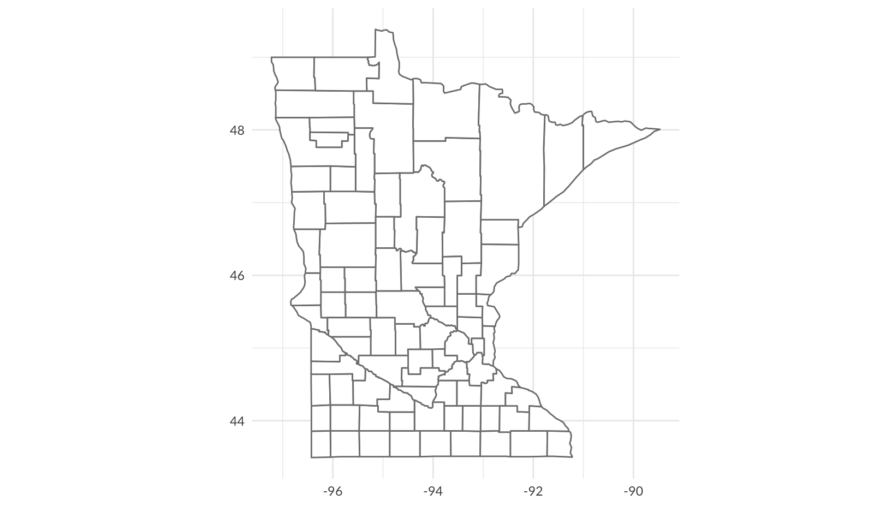
Polygon maps are superseded by simple features maps, so let’s draw it again, adding Minneapolis, in red:
us_counties(resolution = "high", states = "MN") |>
ggplot() +
geom_sf(fill = "white") +
geom_sf(data = filter(us_cities(states = "MN"), city == "Minneapolis"), color = "red") +
coord_sf() +
theme_quo()Side note: although it creates files in /usr/local, which causes Homebrew to complain, rig, The R Installation Manager, supports multiple versions of R, and supports installation of binary packages, which is substantially faster and requires fewer local dependencies.
7 Networks
Like maps and spatial data, networks and graphs occupy a special part of the visualization landscape, but whereas spatial data mostly differ from regular plotting in their use of projections, networks bring their own data structure as well as their own visualization paradigms to the table. Because of these complications networks are not directly supported in ggplot2. Several efforts over the years have tried to add this missing piece and in this chapter we will see how to use ggraph for network visualization. Other packages that offer some of the same functionality includes geomnet, ggnetwork, and GGally for regular network plots, and ggtree and ggdendro for tree visualization specifically.
Notes
While ggplot2 has limited support for maps, it has no direct support for networks and graphs. ggraph offers some interesting visualizations that are useful for understanding social networks, especially this one, which shows how friendships among high school boys changed from 1957 to 1958:
highschool |>
as_tbl_graph(directed = FALSE) |>
ggraph(layout = "stress") +
geom_edge_link() +
geom_node_point() +
facet_edges(~year)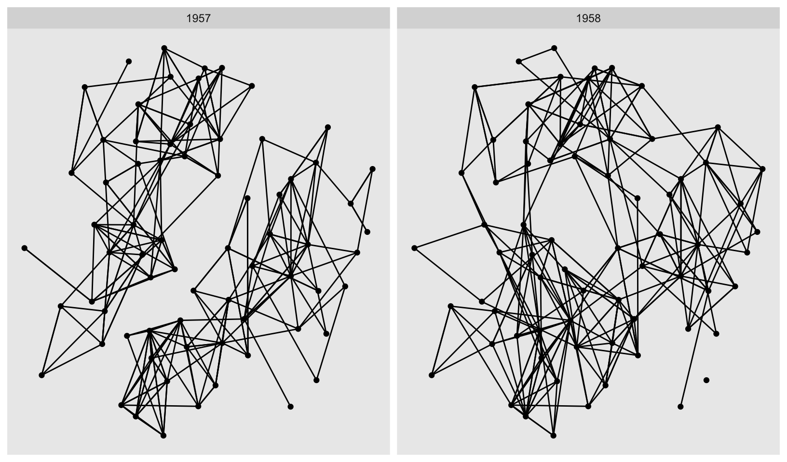
8 Annotations
When constructing a data visualisation, it is often necessary to make annotations to the data displayed. Conceptually, an annotation supplies metadata for the plot: that is, it provides additional information about the data being displayed. From a practical standpoint, however, metadata is just another form of data. Because of this, the annotation tools in ggplot2 reuse the same geoms that are used to create other plots. However, to meet the specific needs that users often have when annotating plots, there are some helper functions in ggplot2 itself, and a number of other packages have extended ggplot2 in ways you may find helpful.
Notes
An important distinction on axis labels:
There are two ways to remove the axis label. Setting
labs(x = "")omits the label but still allocates space; settinglabs(x = NULL)removes the label and its space.
Consider adopting showtext for non-standard fonts, with caveats for using it in R Markdown.
One of the most useful alignments is “inward”. It aligns text towards the middle of the plot, which ensures that labels remain within the plot limits:
df <- data.frame(
x = c(1, 1, 2, 2, 1.5),
y = c(1, 2, 1, 2, 1.5),
text = c(
"bottom-left", "top-left",
"bottom-right", "top-right", "center"
), stringsAsFactors = FALSE
)
ggplot(df, aes(x, y)) +
geom_text(aes(label = text))ggplot(df, aes(x, y)) +
geom_text(aes(label = text), vjust = "inward", hjust = "inward")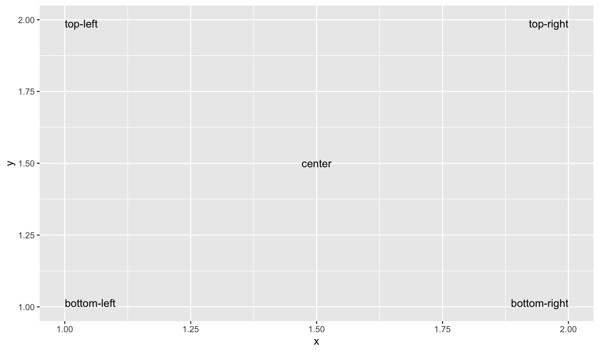
- The font size is controlled by the
sizeaesthetic. Unlike most tools, ggplot2 specifies the size in millimeters (mm), rather than the usual points (pts). The reason for this choice is that it makes it the units for font sizes consistent with how other sizes are specified in ggplot2. (There are 72.27 pts in a inch, so to convert from points to mm, just multiply by 72.27 / 25.4).
Let’s assign blame to unemployment!
presidential <- subset(presidential, start > economics$date[1] & start < max(economics$date))
ggplot(economics) +
geom_rect(
aes(xmin = start, xmax = end, fill = party),
ymin = -Inf, ymax = Inf, alpha = 0.25,
data = presidential
) +
geom_vline(
aes(xintercept = as.numeric(start)),
data = presidential,
colour = "grey50", alpha = 0.5
) +
geom_text(
# themes only affect the non-data components of the plot, see:
# https://github.com/tidyverse/ggplot2/issues/1859
aes(x = start, y = 0.0005, label = name, family = "Lato"),
data = presidential,
size = 3, vjust = 0, hjust = 0, nudge_x = 75
) +
geom_line(aes(date, unemploy / pop)) +
scale_fill_manual(values = c("blue", "red")) +
scale_y_continuous(labels = scales::percent, limits = c(0, NA)) +
scale_x_date(breaks = presidential$start, date_labels = "%Y") +
guides(fill = "none") +
labs(title = "Unemployment rate by presidential term", x = NULL, y = NULL) +
theme_quo(minor.y = FALSE, x = FALSE)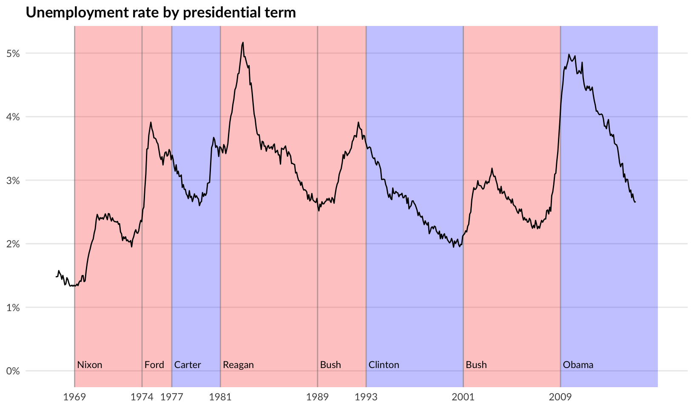
9 Arranging plots
The grammar presented in ggplot2 is concerned with creating single plots. While the faceting system provides the means to produce several subplots all of these are part of the same main visualization, sharing layers, data, and scales. However, it is often necessary to use multiple disparate plots to tell a story or make an argument. These can of course be created individually and assembled in a layout program, but it is beneficial to do this in code to avoid time consuming and non-reproducible manual labor. A range of packages have risen to the occasion and provide different approaches to arranging separate plots. While this chapter will focus on the patchwork package you may also find some of the same functionalities in the cowplot, gridExtra and ggpubr packages.